Als u deze pagina interessant vind hoor ik dat graag via een email. Bekijk ook mijn professionele home page voor informatie over mijn wetenschappelijk onderzoek in de sterrenkunde, of mijn persoonlijke homepage voor mijn andere interesses.
If you wish, you can read this page TRANSLATED INTO ENGLISH using the Google Translator.
Klik hier om een uitgebreid boek geschreven door mijn grootvader Arie van der Marel Jzn. (1886-1969) in de jaren 1950-1960 te downloaden:
Inhoudsopgave Webpagina
Introductie
1. Genealogisch Onderzoek
Familie Takken 2. Familie Takken 3. Families met Vergelijkbare Namen
Familie Naam 4. Naam Oorsprong 5. Naam Frequentie en Verdeling
Genealogie 6. Familie Boeken 7. Stambomen 8. Hoe bepaal ik tot welke tak in behoor?
DNA Onderzoek 9. Studie van Menselijke Populatie Geschiedenis met DNA 10. De Verspreiding van Mensen over de Aarde 11. Oorprong van de Nederlandse Bevolking 12. De Voorvaderen van de Wateringse van der Marel tak 13. Studie van Recente Verwantschappen 14. Verband tussen de Wateringse van der Marel tak en oude Germaanse Stammen 15. Geografische Spreiding van Verwante Families
Open Vragen
16. Plannen voor Verder Onderzoek
Meer recentelijk hebben verschillende individuen voortgebouwd op dit
oorspronkelijke werk, met name Edward van der
Maarel, Willem
van der Marel, Carl Van
Marel , en Aad van der Marel. Hun werk heeft zich voornamelijk
toegespitst op meer recente generaties (19e en 20e eeuw), het meer
compleet uitwerken van bepaalde takken van de familie alsmede
aanverwante families, en het toegangkelijk maken van de vergaarde
informatie via het internet of nieuwe boeken.
Familie Takken
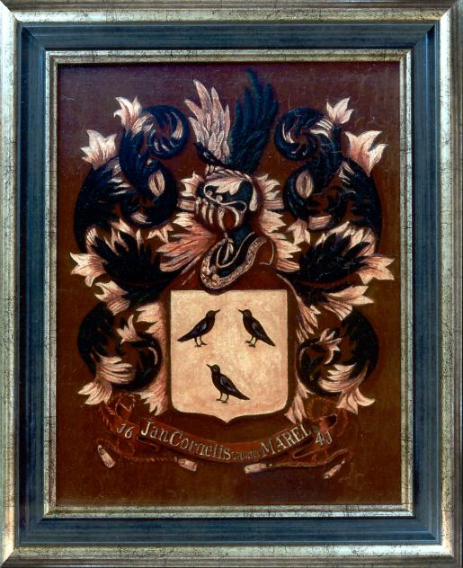
Er zijn drie afzonderlijke takken getraceerd in de groep die
tegenwordig de familienamen van der Marel, van der Maarel, van der
Maarl, of Van Marel voeren:
Mijn grootvader ontdekte in 1968, een jaar voor zijn dood and na een leven lang van onderzoek, dat de 's-Gravenzande/Monster tak niet altijd de naam van der Marel had gevoerd, maar oorspronkelijk van Maarlevelt heette. Derhalve is deze tak niet bloedverwant aan de andere twee van der Marel takken.
Mijn grootvader heeft nooit een verband kunnen ontdekken tussen de andere twee van der Marel takken. De Wateringse tak was voornamelijk een boerengeslacht, terwijl de 's-Gravenzande/Maassluis tak allerlei beroepen uitoefende, maar niet in de landbouw en veeteelt. Het feit dat de familiewapens gelijkenis vertonen doet echter vermoeden dat een connectie in of voor de 15e eeuw tussen deze takken tot de mogelijkheden behoort.
Er bestaan wel meer recente verwantschappen tussen alle de drie
afzonderlijke familie takken door middel van aantrouwen, in het
bijzonder via leden met de familienaam Poot.
 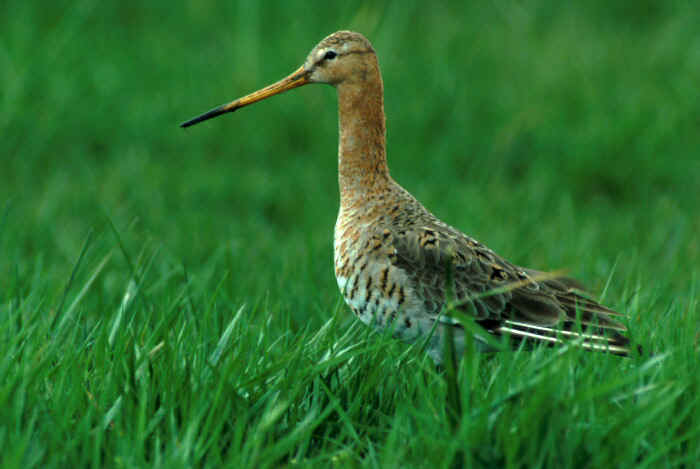
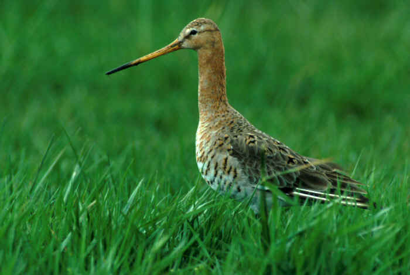
Naam Oorsprong
De naam van der Marel wordt in de Wateringen tak voor het eerst
gebruikt in een akte uit 1617 die de
aankoop op 11 december beschrijft van land in de Nieuwe Wateringveldse
polder door Cornelis Pouwels van der Maerl (ca. 1560-1641). Voor deze
tijd gebruikte men zogeheten patroniemen. De zoon van deze Cornelis
(Jan Cornelisz. ca. 1584-1662) voerde het hierboven weergegeven wapen met
de drie merels dat zijn naam en het jaar 1641 vermeld. Dit doet
vermoeden dat de familienaam gerelateerd is aan de vogel merel.
De naamkunde is de studie die de betekenis, de oorsprong en de verspreiding van namen onderzoekt. Het Netwerk Naamkunde geeft een algemene beschrijving. Het ontstaan van familienamen gebeurde in het algemeen past laat in de Middeleeuwen. Er zijn verschillende typen van familienamen. Zogeheten adresnamen vormen een subtype van de geografische namen. Een adresnaam verwijst naar de woonplaats op het moment dat de naam werd gevormd, en kan ook zijn gevormd aan de hand van de woorden die men gebruikte om de woonplaats van de naamdrager te omschrijven.
De exacte oorsprong van de naam "van der Marel" is onbekend. Maar het is mogelijk dat het een adresnaam is. Toen de familienamen in zwang kwamen noemden velen zich naar gevelstenen en uithangborden in hun huis. Het is mogelijk dat een van de eerste van der Marels woonde in een huis waar zich een gevelsteen bevond met een merel (zie foto links) of grutto (die ook marel wordt genoemd; zie foto rechts), of waar een maarle uithing (een maarle of merlet is heraldisch vogeltje, gebruikt in familiewapens; zie de ethymologie sectie van deze pagina). Ook is het mogelijk dat een wapen met een van deze vogels reeds van ouds door de familie werd gevoerd en dat de familie zich daar naar heeft genoemd. Weer een ander alternatief is dat de associatie van de merel werd gebruikt als metafoor voor iemand die goed kong zingen of fluiten.
Voor de naam Maarleveld geeft de Nederlandse Familienamen Databank als verklaring dat Maarleveld de naam is van een huis in Egmond-Binnen. De betekenis van het toponiem zou kunnen zijn: veld waar marels (= grutto's) broeden. Vergelijk het toponiem Marel vlak of Maarle te Noordwijk.
Er zijn echter ook andere mogelijke oorsprongen voor de naam. Het Woordenboek van de
Familienamen in Zeeland (Frans Debrabandere, 2009) geeft aan dat
de naam van Marle (geassocieert met het geslacht uit Brielle) mogelijk
verwant is met gebruik van het woord "marel" voor een "mergel" of
"mergelgroeve". Hetzelfde boek geeft aan dat de naam Maarleveld
afstamt van "mergelveld". Maar als alternatief kunnen er ook
associaties zijn met de plaatsnaam Maarle/Meerle bij Poppel
(Antwerpen), of Maarle bij Noordwijk (Zuid-Holland). Het is
interessant in deze context dat het kasteel
Meerlenhof by Antwerpen ook drie merels in het wapen voert.
Naam Frequentie en Verdeling
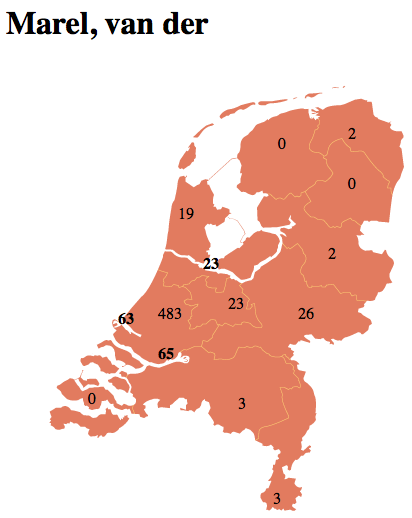
Er zijn meer dan 100000 verschillende familienamen in Nederland (de
Nederlandse telefoongids uit 1993 bevatte er 105789). Op de lijst van meest
voorkomende familienamen in Nederland is van der Marel nummer
1826, met 1281 naamdragers in het jaar 2007 en 712 naamdragers in het
jaar 1947.
De LinkedIn.com website bevat de publieke professionele profielen van 250 individuen met de naam van der Marel.
De verzamelde statistieken uit de lijst van meest voorkomende familienamen in Nederland voor de meest relevanten namen/spellingen zijn als volgt:
Klik de naam in de tabel om de gedetailleerde info the zien in de Nederlandse Familienamen Databank. Dit vertoont tevens een "verdelingskaart" die aangeeft hoeveel mensen met de gegeven familienaam wonen in iedere Nederlandse gemeente anno 2007. Een kaart die de verdeling over provincies aangeeft in de volkstelling van 1947 is ook beschikbaar (zie figuur rechts voor de van der Marel verdeling in 1947).
De verdelingskaarten voor van der Marel, van der Maarel, en Maarleveld over Nederland geven allen een sterke concentratie aan in Zuid-Holland. Dit is consistent met een oorprong van dit geslacht in het Westland, zoals reeds eerder afgeleid uit genealogisch onderzoek. Een belangrijke conclusie uit deze kaarten is dat er geen reden is om te veronderstellen dat er misschien andere van der Marel takken kunnen zijn (geweest) die elders in Nederland hun oorsprong hebben gevonden. Mijn grootvader vondt hier ook nooit genealogisch bewijs voor, maar het dient te worden opgemerkt dat zijn onderzoek zwaar geconcentreerd was op het westen van het land.
De verdelingskaart voor van der Maarl is sterk geconcentreerd in Noord-Holland. Dit is eenvoudig te begrijpen uit het feit dat deze tak zijn oorsprong vondt in een naamsverandering by Arie van der Maarl (1822-1900; de broer van mijn over-grootvader), zoon van Johannes Arijsz van der Marel, die werd geboren in Loosduinen maar in zijn leven verhuisde naar de Haarlemmermeer.
De verdelingskaart voor de van Marle's is meer gevarieert, met bewoners over het hele land, maar met concentraties in het Oosten (Overijssel, Gelderland) en Noord-Holland. Dit is consistent met de reeds vernoemde genealogische oorsprong van deze familie in Overijssel. Het is echter mogelijk dat ook sommige leden van de bovengenoemde van der Marel en Merula families de naam van Marle zijn gaan dragen. Merula's uit Brielle verhuisden later naar Dordrecht en Leiden, en er was Cornelius van Marle die in 1783 te Leiden werd geboren.
Vergelijkbare naamverdelingskaarten zijn beschikbaar in andere landen. Zoals reeds vermeld is er een aanzienlijke tak mat de naam Van Marel in de Verenigde Staten. Deze tak ontstond door de emigratie van Jacob van der Marel (1809-1858) in 1848 naar de staat Iowa. Hij veranderde zijn naam in Van Marel. Er is door mijn eigen verhuizing in 1994 nu ook een tak met de naam van der Marel in Verenigde Staten.
In Frankrijk, wonen een aantal van der Marel's die afstammen van mijn oom Hendrik van der Marel (geb. 1927), die vlak na de 2e wereldoorlog emigreerde en een boerderij kocht in Aube.
In Canada wonen een aantal van der Marels, geconcentreerd in de staat Ontario. Canada was een favoriete emigratiebestemming van Nederlanders in de vorige eeuw. Dit voorbeeld werd bijvoorbeeld gevolgd door Cornelis Jan van der Marel (geboren 1908), een neef van mijn grootvader, die rond de tweede wereldoorlog emigreerde naar de omgeving van London, Ontario. Een ander voorbeeld was Andy van der Marel, wat leidde tot de Vandermarel trucking company in Canada.
In Belgie, Duitsland,
Zweden en Zwitserland
wonen een handvol van der Marel's en van der Maarel's. In Italie, Polen, Oostenrijk wonen er geen. De
namen Merle en (De) Merlier komen in Belgie redelijk vaak voor, maar
er is geen reden om aan te nemen dat deze verwant zijn.
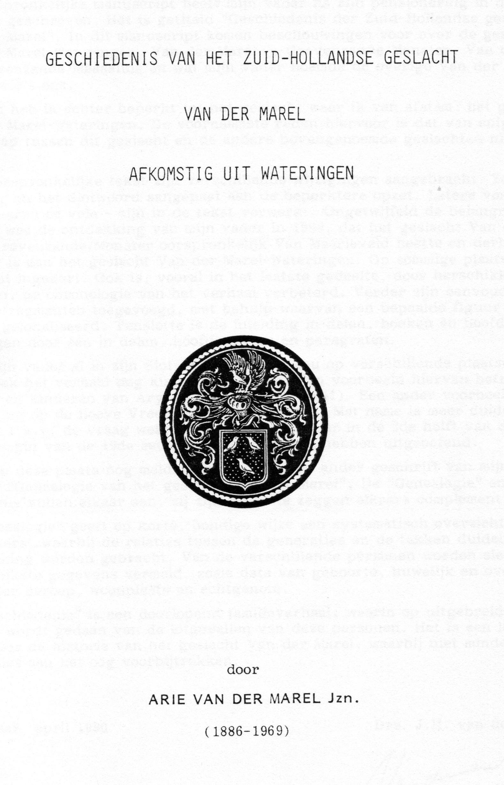
Familie Boeken
Het werk van mijn grootvader leidde tot een handgeschreven en
geillustreerde van der Marel geschiedenis in 8 delen, met de
resultaten van zijn onderzoek in verhaal vorm. Deze werden
oorspronkelijk geschreven in 1951-1952, maar werden bijgewerkt tot
zijn dood met nieuwe resultaten. Alle delen bevinden zich in mijn
bezit. Mijn vader, Jan Hendrik van der Marel (1919-2009), liet in 1990
de eerste vier delen, die betrekking hebben op de Wateringen tak,
verschijnen in gedrukte boekvorm onder de titel:
Klik om het boek in pdf-formaat te downloaden. De overige 4 delen van mijn grootvader's werk zijn nooit in drukvorm verschenen. Klik hier voor een inhoudsopgave van deze handgeschreven delen. Zij bevatten genealogische beschrijvingen van de andere van der Marel takken, en van families met gerelateerde namen zoals Merula, van Merlen, en van Marle, alsmede latere aanvullingen en gefotografeerde oude akten.
Het werk van Carl Van Marel leidde tot een boek over de Amerikaanse Van Marel tak dat electronisch beschikbaar is in pdf-formaat: Van Marel Family 1847-2007.
Arend Simonsz. van der Marel schreef een bundeling van feiten over de voorouders en het nageslacht van Jan van der Marel (1811-1865). Ook dit boek is electronisch beschikbaar is in pdf-formaat: Wat er allemaal komen kan van twee Maria's en een Jan.
Er zijn ook documenten over de van der Marel familie te vinden in het Archief van het Centraal Bureau voor Genealogie.
Mijn grootvader heeft ook de genealogien van een aantal andere
families uitgebreid bestudeerd. Naast de al reeds genoemde materialen,
bezit ik copien van publicaties van hem over de families de Bray,
Dedel, van Dorsten, van Giessen, van Gulpen, van Klaveren, Padbrue,
Tuning,
en Westerbaen. Daarnaast bezit ik handgeschreven boeken van hem over
de families Kofoed/Koefoed, van Klaveren, en van Oosten. [Ik stam zelf
af, 10 generaties terug,
van Jens
Pedersen Kofoed (1628-1691), bekend in Denemarken als de Bevrijder
van Bornholm. Een van zijn
voorvaderen
vergezelde Willem de Veroveraar in 1063 op zijn tocht naar
Engeland.] Mensen met interesse in deze families kunnen contact met
mij opnemen.
Het werk van Edward van der Maarel en Willem van der Marel leidde vervolgens tot verder uitgewerkte en electronische beschikbare genealogien en stambomem. De relevante websites zijn:
Stambomen voor de verschillende takken zijn alsvolgt te vinden op
Edward's site met behulp van
de zoek
functie van de stamboompagina. Of
je kunt klikken op de volgende pdf files die ik met behulp van
Edward's site heb vervaardigd. Deze hebben echter niet de volle
functionaliteit van de site, en zijn niet bijgewerkt na November 2009.
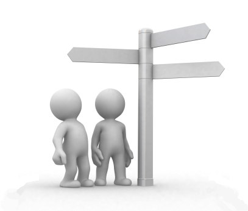
Zodra je jezelf of een directe voorouder in de vaderlijke lijn hebt
gevonden kun je navolgen tot welke tak je behoort, als volgt:
Met behulp van de stamboompagina
is het ook mogelijk om statistieken te berekenen voor de nog levende
personen. Dit geeft de volgende resultaten:
Het DNA molecuul heeft een dubbele helix structuur zoals rechts
weergegeven. DNA is het genetische materiaal dat van generatie tot
generatie wordt overgedragen. In het algemeen dragen zowel het DNA van
de vader als van de moeder bij, maar er zijn uitzonderingen. Iedere
man draagt in zijn Y-chromosoom DNA dat alleen van vader op zoon wordt
overgedragen, zonder vermenging met moederlijk DNA. Iedere vrouw
draagt zogeheten mitochondrial DNA over aan haar kinderen, zonder
vermenging met vaderlijk DNA. In beide gevallen is het betreffende DNA
dan normaalgesproken een identieke copy van generatie op generatie. Er
treden echter soms in individuen spontane mutaties op die het DNA een
unieke "marker" geven. Deze marker wordt dan doorgegeven aan alle
volgende generaties, terwijl andere individuen op aarde deze marker
niet hebben. Dit verdeelt het DNA van de mensheid in aparte categorien
die "haplogroepen" worden genoemd. Deze haplogroepen zijn in
specifieke patronen verdeeld over de aarde. Via studie van deze
patronen, en via combinatie met ander archeologisch, antropologisch en
historisch bewijsmateriaal, is het mogelijk gebleken om te achterhalen
hoe en wanneer de mensheid zich over de aarde heeft verspreid.
Voor een meer gedetaileerde uitleg van het vakgebied van Populatie
Genetica, zie bijvoorbeeld:
Hoe bepaal ik tot welke tak in behoor?
Je kunt jezelf vinden op Edward's site door op de
stamboompagina
de individuen met de juiste achternaam en initialen te zoeken. Merk op
dat voor levende personen alleen de initialen worden vermeld, en niet
de hele voornaam. Als je familienaam van der Marel is, of een van de
aanverwante vormen, dan zijn er waarschijnlijk vele matches. Je kunt
dan alle matches een voor een klikken, tot je de persoon met de juiste
ouders vindt. Maar het is waarschijnlijk sneller om direct de
familienaam van je moeder te zoeken, waar er waarschijnlijk veel
minder van in de database staan. Vindt dan jezelf door op haar
kinderen te klikken. Als dit allemaal niet werkt, probeer dan je
(over-)grootouders, en klik hun nakomelingen. De database is echter
waarschijnlijk niet helemaal compleet, dus het is altijd mogelijk dat
geen van deze methodes successvol is.
(Wateringen: I1; 's-Gravenzande/Maassluis:
I16152; 's-Gravenzande/Monster: I14580).
Er dient echter wel opgemerkt te worden dat deze percentages een
vervormd beeld kunnen geven van de werkeleijkheid, omdat de stamboom
informatie niet compleet is. Vergelijking met het aantal mensen in
2007 gerapporteerd door de Nederlandse Familienamen
Databank suggereert dat de informatie slechts ongeveer 40%
compleet is. Sommige takken kunnen meer compleet zijn dan anderen. De
recente generaties (van welke er meer en meer zijn om bij te houden)
zijn waarschijnlijk het meest incompleet.
Studie van Menselijke Populatie Geschiedenis met DNA
 Een van de takken van moderne wetenschap is om met behulp van DNA
analyse te bestuderen hoe de moderne mens onze planeet heeft bevolkt
over de laatste paar-honderd-duizend jaar. Deze DNA analyse is ook een
fantastische nieuwe methode om familieverwantschappen te bepalen of
verifieren.
Een van de takken van moderne wetenschap is om met behulp van DNA
analyse te bestuderen hoe de moderne mens onze planeet heeft bevolkt
over de laatste paar-honderd-duizend jaar. Deze DNA analyse is ook een
fantastische nieuwe methode om familieverwantschappen te bepalen of
verifieren.
De Verspreiding van Mensen over de Aarde
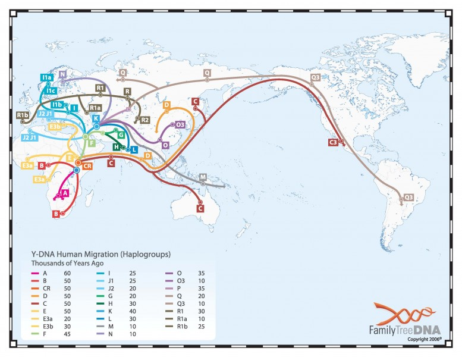
Studies van populatie gentica hebben geleid tot en gedetailleerd
begrip van het onstaan en migratie van moderne mensen over de aarde.
Zie bijvoorbeeld voor een geillustreerd uitleg van alle belangrijke
resultaten:
De mens verspreide zich uit Afrika over de aarde via migratie (zie kaart links). De eerste migratie golf was naar Azie, zo'n 60,000 jaar geleden, en van daaruit naar Australie. Het Amerikaanse continent is is als laatste bevolkt, zo'n 15,000 jaar geleden, via migratie vanuit Azie over de Bering Straat (tussen tegenwoordig Rusland and Alaska). De bevolking van Europa is zo'n 45,000 jaar geleden gestart, maar heeft bestaan uit meerdere migratiegolven vanuit verschillende gebieden, verspreid over tien-duizenden jaren.
Voor alle landen in Europa zijn de populatie percentages per
haplogroep bepaald. De resultaten zijn beschikbaar in
bijvoorbeeld tabel
vorm of
in grafische
vorm. Het grootste deel van Europa behoort ofwel tot y-chromosome
DNA (yDNA) haplogroep R (zo'n 50%) of haplogroep I (zo'n 25%). Dit is
tevens het geval voor Nederland, met zo'n 60% in haplogroup R en 25%
in haplogroep I. Binnen iedere haplogroep is er een onderverdelingen
in zogeheten "subclades". In Nederland valt 54% van de personen in de
subclade R1b en 19% in subclade I1 (tot voorkort werd deze I1a
genoemd).
Oorprong van de Nederlandse Bevolking
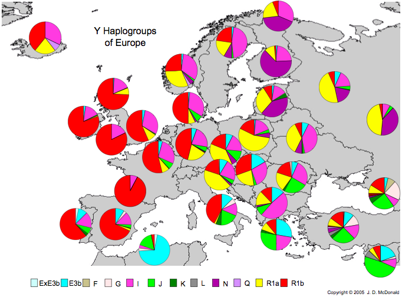
Voor een algeheel overzicht van alle yDNA haplogroepen, hun oorsprong
en karakteristieken, zie bijvoorbeeld:
I1 onstond zo'n 15,000 jaar geleden in een andere groep die reeds in
Europa was gevestigd. Deze groep was naar het zuiden getrokken,
waarschijnlijk in het gebied rond de Spaans-Franse grens, om warmte te
zoeken tijdens de laatste Ijstijd (zo'n 15,000 jaar geleden). De groep
wordt gekenmerkt door marker M253 die door mutatie ontstond in het
yDNA van een man in de groep. De afstammelingen van deze man trokken
later langs de Atlantische kust naar het Noorden, en vormen de
voorouders van een-vijde van alle Nederlanders (en de helft van alle
Scandinaviers).
De Voorvaderen van de Wateringse van der Marel tak
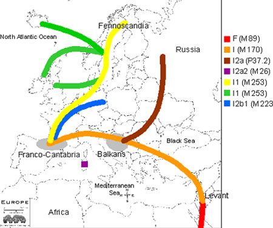
Mijn eigen yDNA behoort tot haplogroep I1 (de naamgeving van deze
groepen is enigsinds verwarrend. Deze groep wordt ook I1-M253 genoemd,
en heette tot voorkort I1a. National Geographic gebruikt nog steeds
deze laatste notatie.) Omdat yDNA geerft wordt langs de mannelijke
lijn, betekent dit dus dat de stamvader van de Wateringse tak (Roeland
Pouwelszn van der Marel, geb. 1510 te Wateringen) dus ook deze
haplogroep had. Niet alleen yDNA, maar ook de familienaam van der
Marel, wordt geerft langs de mannelijke lijn. Dit betekent dus dat
alle mannelijke van der Marel's, van der Maarel's en van der Maarl's
in de Wateringse tak tot haplogroep I1 behoren. Deze conclusies zijn
gebaseerd op de aanname dat er geen buitenechtelijke kinderen
voorkomen in de stamboomlijnen (waarschijnlijk een oversimplificatie,
op basis
van wetenschappelijk
onderzoek rond dit probleem).
Dit betekent dat de voorvaderen van de Wateringse tak eerst via Africa
naar het Midden-Oosten trokken (rood in de kaart links). Vervolgens
trokken ze door de zogeheten Levantine Corridor naar Europa, en
Westwaards langs de Middelandse Zee (oranje). Tijdens de laatste
ijstijd verbleven ze in de Westelijke van de twee gebieden (grijs in
de kaart links) waar "overwinteren" mogelijk was. Na de ijstijd
vertrokken ze Noordwaards langs de Atlantische kust (geel). Ze bleven
uiteindelijk in Nederland, terwijl anderen doorreisden tot in
Scandinavie, of later de overtocht naar Engeland en Ijsland maakten
(groen). De kleuren in de figuur geven de verschillende subclades van
de yDNA I haplogroep weer.
Studie van Recente Verwantschappen
De yDNA haplogroup en subclade meten de aanwezigheid van zeer
infrequente yDNA mutaties die bekend staan as Single-nucleotide
polymorphisms (SNPs). Ze zijn daarom zeer geschikt voor het meten
populatie migraties over tijdschalen van tienduizenden jaren. Ze zijn
echter niet erg geschikt voor het bestuderen van meer recente
familieverbanden. Bijvoorbeeld, de ongeveer 3 miljoen Nederlanders met
haplogroep I1 hebben allemaal een gemeenschappelijke voorvader zo'n
15,000 jaar geleden. Maar de haplogroep geeft geen inzicht in welke
van deze personen meer recente familiebanden hebben.
Als onderdeel van DNA analyze worden ook normaal gesproken metingen gedaan een aantal zogeheten Short Tandem Repeats (STRs). Deze muteren relatief sneller dan SNPs. Typische waarden voor de kans op een mutatie zijn ongeveer 0.2% per STR, per generatie. De exacte waarden varieren per STR locatie in the yDNA. Omdat er vaak tussen 12 en 67 STR locaties worden gemeten by DNA analyse, is er nogal wat variatie in STR waarden binnen een haplogroep. STR waarden zijn daarom meer geschikt voor het ontrafelen van recente familieverbanden binnen een haplogroep. Analyse van de STR frequenties in de I1 haplogroup geeft aan welke waardes het meeste voorkomen.
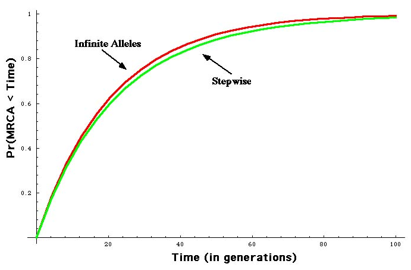
Als voor twee personen een aantal M verschillende STR locaties worden
gemeten, is het mogelijk om uit de resultaten af te leiden wat de
kansverdeling is voor de tijd die is verlopen sinds hun laatste
gemeenschappelijke voorvader. Dit wordt TMRCA genoemd: Time since Most
Recent Common Ancestor. Als twee personen dezelfde STR waarden hebben
op alle M locaties, dan is de mediaan van de kansverdeling
173.3/M, gemeten in generaties. Om dit om te zetten in jaren moet men
de gemiddelde tijd per generatie weten. Dat is ongeveer 30 jaar, zodat
TMRCA = 5200/M jaar.
De mediaan geeft de tijd aan zodanig dat de kansen dat de werkelijke
voorouder korter of langer geleden leefde precies 50% zijn. Om een
meer robuste schatting te geven gebruikt men in het algemeen een
interval rondom de mediaan waarbinnen de waarden ook "acceptabel"
worden geacht. Het 90% confidence interval wordt bijvoorbeeld veel
gebruikt. Om dit uit te rekenen moet men de exacte vorm van de
kansverdeling weten. Deze is vrij eenvoudig te berekenen;
bijv. het figuur rechts laat zien de totale kans dat de TMCRA minder
is dan N generaties, waar N langs de horizontale as is
weergegeven. Kansverdelingen voor het geval waarin bijvoorbeeld
slechts M-1 of M-2 van de STR locaties overeen
komen zijn
ook beschikbaar.
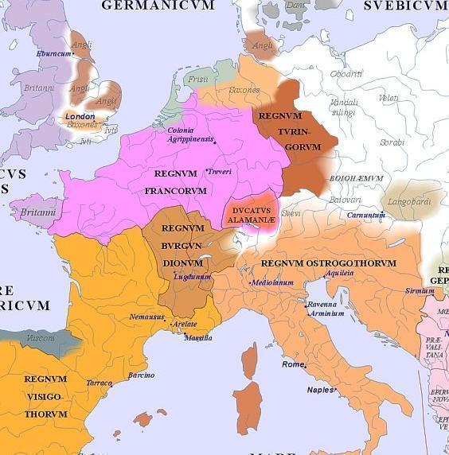
Verband tussen de Wateringese van der Marel tak en oude Germaanse Stammen
Binnen de I1 group komen er vele combinaties van STRs voor. Deze
kunnen worden onderverdeeld in een aantal groepen rondom een een
aantal zogeheten modale
haplotypen (zie tevens hier).
Het meest frequente type komt voornamelijk voor in Nederland, Noord-West Duitsland, en Denemarken, en is tevens aanwezig in mindere mate in Oost- and Zuid-Duitsland, zuid-Zweden, en Groot Brittanie. Dit haplotype woord "Angel-Saksisch" genoemd omdat het grofweg overeen komt met het gebied dat bezet werd door de Angel-Saksen in de vroege Middeleeuwen (zie figuur links; maar direct verband tussen DNA types en individuele oude stammen nooit is aangetoond). Het "Noorse" type is het meest frequente type in Zweden en Finland, en is het op-een-na meest frequente type in Noorwegen en Denemarken. Het "ultra-Noorse" type is meest frequent in Noorwegen, en het is derde op de lijst van meest frequente types in Zweden en Denemarken.
Analyze van mijn DNA resultaten met behulp van de software van
de World
Haplogroup & Haplo-'I' Subclade Predictor geeft aan dat mijn
waarden het beste passen binnen de Angelsaksiche typen. Dit is dus
consistent met de verwachting, gezien de Nederlandse afkmost van mijn
familie.
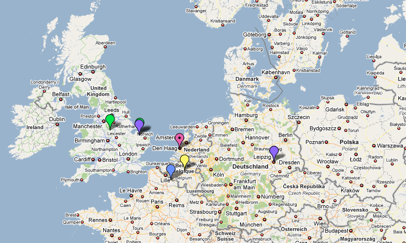
Geografische Spreiding van Verwante Families
Er zijn verscheiden grote databeses op het internet van yDNA STR
combinaties gemeten voor mensen over de aarde. Zie bijvoorbeeld familytreedna.com, yhrd.org, genebase.com. Het is/was mogelijk om
in dergelijke databases te zoeken naar mensen met een vergelijkbaar
DNA profiel of achternaam.
De kaart (rechts) toont de locaties voor individuen in de databases (beschikbaar rond 2010) die een goede DNA match vormen met mijn gemeten yDNA STR combinaties. Mijn DNA patroon lijkt van oorsprong dus alleen rond de lage landen voor te komen. Ook die is consistent met de reeds genoemde Angelsaksiche typen.
De DNA resultaten geven aan dat de van der Marel Wateringen tak een redelijk normale achtergrond heeft, in vergelijking met andere Nederlandse families. De haplogroep I1 komt veel voor in Nederland, en het Anglo-Saksische haplotype is ook typische voor I1 individuen in Nederland. De oorprong van individuen in databases die een goede DNA match vormen kan worden getraceerd naar de naburige landen landen Engeland, Belgie, en Noord-Frankrijk. Het feit dat de matches niet tot Nederland beperkt zijn is niet verbazingwekkend, gezien de vele volksverhuizingen in Europa in de vroege Middeleeuwen.
Dit alles betekent dat de van der Marel's een "typisch Hollanse"
familie vormen. Er is geen reden om aan te nemen dat er voor de 15e
eeuw bijvoorbeeld ongebruikelijke genetische inmenging in de
vaderlijke lijn is geweest van buitenlandse bezettingen en invallen,
zoals door Romeinen of later Vikingen.
Plannen voor Verder Onderzoek
Ik zou graag de antwoorden vinden op de volgende vragen betreffende
het geslacht van der Marel:
{kind=link}
{kind=link}
{kind=link}
{kind=link}
{kind=link}